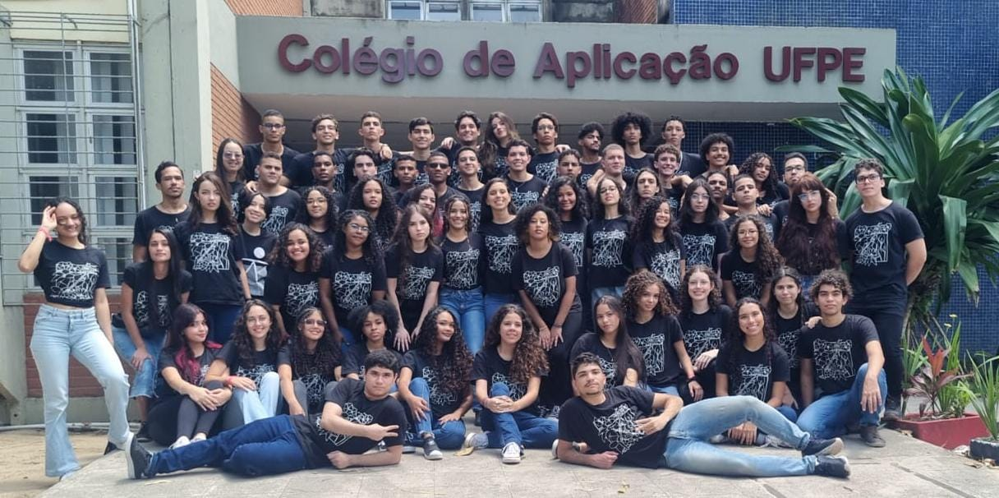
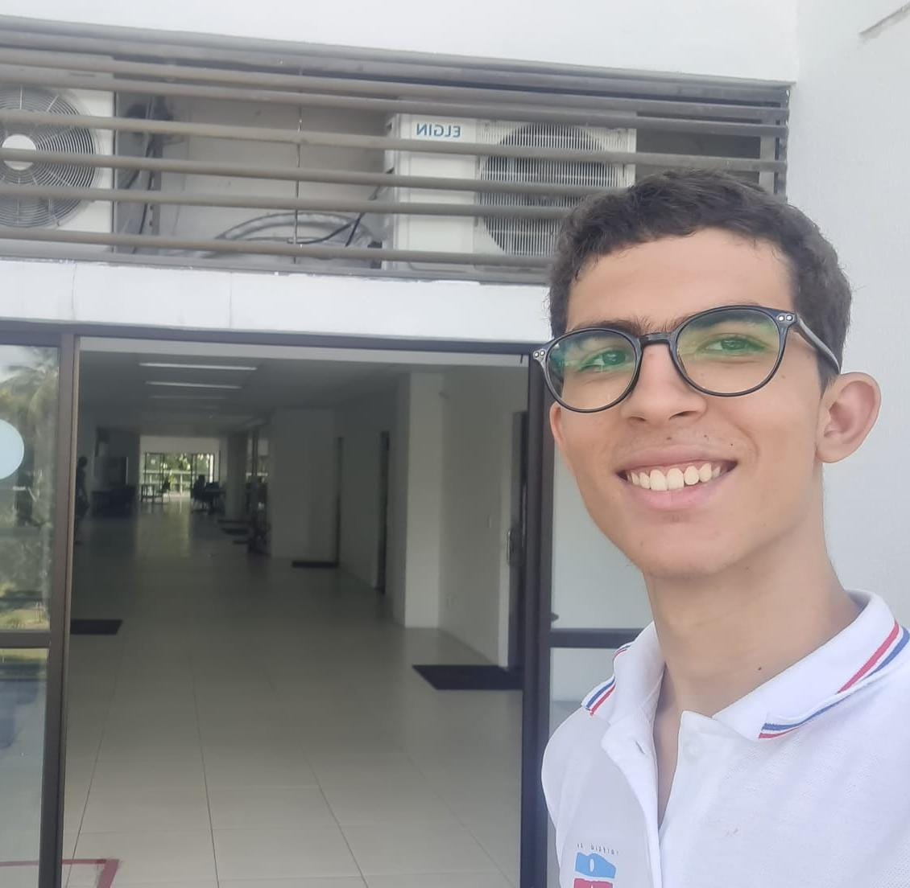
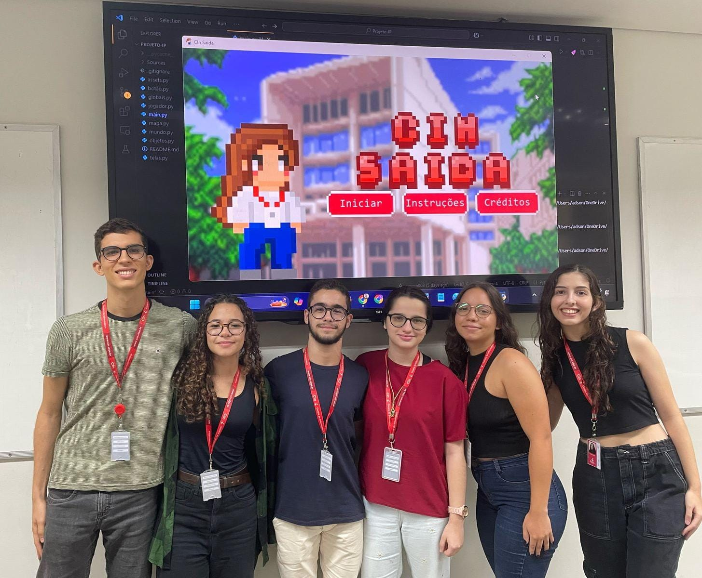

Minha Escola
O ensino
Estudei no Colégio de aplicação da UFPE do meu sexto ano do ensino fundamental até o terceiro ano do ensino médio. Foi uma experiência interessante, pois o Colégio se localizava dentro do Campus e tínhamos um contato mais próximo com a faculdade. Muitas aulas eram dadas por estagiários, então tivemos que aprender a flexibilizar nossos métodos de estudo, pois cada docente trazia um método próprio de ensino. Aprendemos a não depender de professores para dar assuntos e obtivemos autonomia no estudo.
Conquistas
Estudando no Colégio de Aplicação, obtive algumas conquistas. As principais foram minha medalha de prata e menção honrosa na OBMEP (Olimpíada Brasileira de Matemática para Escolas Públicas). Participei, antes de ganhar essas medalhas do Programa de Iniciação Científica Júnior, que ministrava aulas de matemática na UFRPE. Ganhei medalha de ouro na Olimpíada Pernambucana de Física, também.
Línguas e idiomas
No Colégio de Aplicação, ocorre um sorteio no início de todos os anos na entrada de novos estudantes. Aqueles estudantes sorteados para a turma A seriam selecionados para o estudo de francês, e os da turma B para inglês. Eu fui selecionado para a língua francesa. Posteriormente, no nono ano, foi-me dada uma segunda opção de língua, tendo eu escolhido o espanhol, visto que já apresentava domínio da língua inglesa. Logrei êxito na avaliação do DELF B2 (Diploma conferido àqueles com nível intermediário- avançado na língua de interesse). Durante a pandemia, pude aperfeiçoar minhas habilidades na língua francesa e espanhola através de servidores dedicados e gratuitos no discord, nos quais podia conversar com pessoas de diversas nacionalidades. No ano de 2022, participei do projeto France Eco Lab, que procurava fomentar as habilidades linguísticas enquantos nos envolvia em um projeto de conservação ambiental.
Habilidades cultivadas
Na minha vivência no CAp, aprendi algumas coisas que me foram úteis no futuro. Uma das mais marcantes foi a fomentação do pensamento crítico em todas as esferas. O Colégio é voltado muito para o estudo das ciências humanas, mas aprendi a fazer alguns desses "por quês" em outros ramos, como o da matemática. No sétimo ano tivemos uma cadeira chamada Pesquisa, onde aprendíamos o método científico, formatação na ABNT e outros tópicos importantes, que já são usados na vida de universitário. Tive matérias como teatro, que me permitiu desenvolver minha oralidade e espontaneidade em meio às outras pessoas.
O CIn
Agora estou dentro do Centro de Informática da UFPE, um ambiente sem dúvida henriquecedor. Ver pessoas tão dedicadas ao meu redor me faz sair da zona de conforto e procurar projetos diferentes. Procuro experimentar o máximo possível para entender minha área de maneira mais ampla. Estou pouco a pouco conhecendo melhor os colegas e coletando experiência dos mais antigos. Pretendo passar esse legado que venho recebido para as próximas gerações de alunos. Atualmente, estou envolvido no processo seletivo do Citi ( A empresa Júnior criada no CIn) e da monitoria de Introdução a Programação.

Terceirão do Cap 2023

Registro da minha primeira visita solitária ao Cin

Apresentação do projeto de introdução a programação. (Jogo Cin Saída)